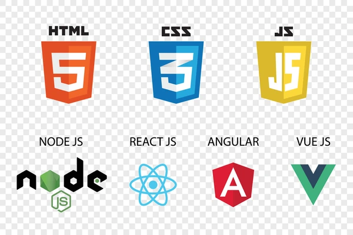

El backend es la parte de un sitio web o aplicación que maneja la lógica y procesamiento de datos.
Controla la funcionalidad no visible para el usuario, como la gestión de la base de datos y la seguridad.
| Navegador | Versión mínima que soporta "display: grid" |
|---|---|
| Google Chrome | 57 |
| Mozilla Firefox | 52 |
| Safari | 10.1 |
| Microsoft Edge | 16 |
| Internet Explorar | No compatible |
| Opera | 44 |